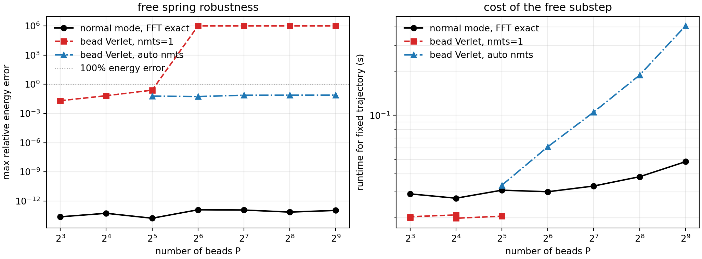
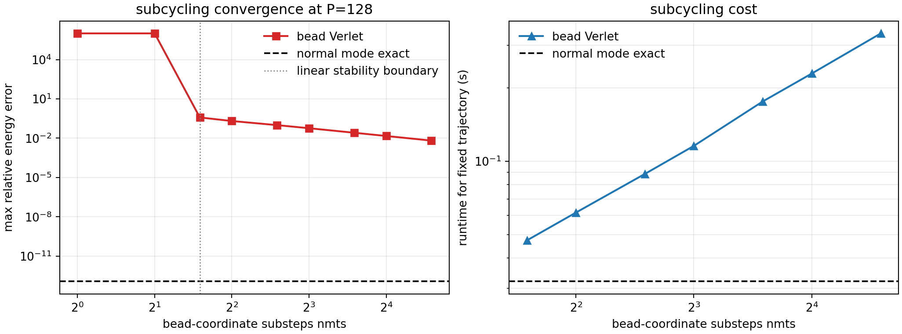

PIMD Series - Part VI
Normal-Mode Free Propagation
Part V used normal modes to propagate an RPMD harmonic benchmark. This note steps back to the integrator itself. The i-PI normal-mode code diagonalizes the free ring-polymer spring matrix and propagates each mode analytically; the alternative bead-coordinate route integrates the same spring force by velocity Verlet, often with subcycling. The difference is small at low bead number, but it becomes the controlling stability issue when \(P\) is large.
Free Ring-Polymer Block
In a split PIMD or RPMD integrator, the stiff part is the free ring-polymer Hamiltonian
The spring matrix is circulant. Its Fourier eigenvectors diagonalize the internal motion and give
In normal-mode coordinates, the free step is just independent harmonic motion. For \(\omega_k>0\),
The centroid mode has \(\omega_0=0\) and drifts freely. This is the idea behind i-PI's `normalmodes.py`: transform to normal modes by FFT or by an explicit matrix, build the per-mode propagator, apply it, and transform back.
Bead-Coordinate Alternative
The same free spring block can be integrated directly in bead coordinates:
A bead-coordinate velocity-Verlet substep is
This is simple and avoids transforms. The price is that Verlet must resolve the highest spring frequency. Since \(\omega_{\max}\approx2\omega_P=2P/(\beta\hbar)\), the linear stability condition is roughly
Therefore, at fixed outer timestep \(\Delta t\), the bead-coordinate route needs a subcycle count \(n_{\mathrm{mts}}\) that grows approximately linearly with \(P\). This is the role of the Cartesian `free_babstep` style path in the reference i-PI code.
Expected Limits
- At \(P=1\), there are no internal modes, so normal-mode and bead-coordinate propagation are the same classical free drift.
- At small \(P\), bead-coordinate Verlet can be cheaper because it avoids FFTs and a single step may still be stable.
- At large \(P\), the largest spring frequency grows with \(P\). Fixed-step bead-coordinate Verlet either becomes inaccurate or unstable.
- Subcycling restores stability, but its required \(n_{\mathrm{mts}}\) also grows with \(P\), so the apparent low-\(P\) efficiency advantage can disappear.
- Normal-mode propagation removes the spring stiffness from the timestep restriction. It does not remove physical-force timestep limits, and Part III still matters for exact-free-step resonance and Cayley stabilization.
Workflow
- Use the free ring-polymer Hamiltonian only, with \(m=\hbar=1\), \(\beta=2\), outer timestep \(\Delta t=0.04\), and 600 outer steps.
- Initialize a deterministic high-mode-rich bead configuration and momentum for each bead count.
- Compare three propagators: FFT normal-mode exact propagation, bead-coordinate Verlet with \(n_{\mathrm{mts}}=1\), and bead-coordinate Verlet with automatic subcycling.
- Scan \(P=8,16,32,64,128,256,512\), record maximum relative free-ring-polymer energy error, and time the completed trajectories.
- At \(P=128\), scan \(n_{\mathrm{mts}}\) directly to see how bead-coordinate convergence and runtime change.
Result: Bead Number Scan
With \(\Delta t=0.04\), one-step bead-coordinate Verlet is stable through \(P=32\), but the first unstable case appears at \(P=64\). Normal-mode FFT propagation conserves the free-ring-polymer energy to roundoff; at \(P=512\), the maximum relative error is \(1.07\times10^{-13}\). The automatic bead-coordinate subcycling remains stable at high \(P\), but at \(P=512\) it uses \(n_{\mathrm{mts}}=26\), gives a maximum relative energy error of \(7.62\times10^{-2}\), and takes about \(0.407\) s for the fixed trajectory versus \(0.048\) s for the normal-mode route.

Result: Subcycling Scan
At \(P=128\), bead-coordinate Verlet with \(n_{\mathrm{mts}}=1\) or 2 is unstable. The linear stability boundary predicts that \(n_{\mathrm{mts}}\ge3\) is needed for this timestep. Increasing \(n_{\mathrm{mts}}\) then reduces the energy error, but the cost grows almost linearly: the best tested case, \(n_{\mathrm{mts}}=24\), lowers the maximum relative energy error to \(6.58\times10^{-3}\), while remaining much slower than the exact normal-mode free step.

Interpretation
The test mostly confirms the practical intuition, with one correction. At low bead count, bead-coordinate evolution can indeed be cheaper, and for \(P=8\) or \(16\) its errors may be acceptable for a loose free-step tolerance. But the advantage is conditional: as \(P\) grows, the spring frequency grows with it, so fixed-step bead-coordinate Verlet first becomes inaccurate and then unstable. Subcycling can recover robustness, but it turns the cost into a stiffness-management problem. Normal modes are the cleaner limit: the free spring block is solved analytically, and the remaining timestep questions come from the physical potential, thermostat choices, and the resonance issue discussed in Part III.
Code used in this note
- normal_mode_vs_bead.py implements FFT normal-mode propagation, bead-coordinate Verlet propagation, bead-number scans, subcycling scans, figures, and CSV tables.
- normal-mode-vs-bead.csv stores the bead-number scan: method, \(P\), \(n_{\mathrm{mts}}\), maximum energy error, runtime, and stability flag.
- normal-mode-vs-bead-subcycling.csv stores the \(P=128\) subcycling scan.
- normal-mode-vs-bead-summary.csv stores the compact numerical conclusions used in the text.
References
- Ceriotti, More, and Manolopoulos, Comput. Phys. Commun. 185, 1019 (2014).
- Tuckerman, Berne, Martyna, and Klein, J. Chem. Phys. 99, 2796 (1993).
- Korol, Bou-Rabee, and Miller, J. Chem. Phys. 151, 124103 (2019).